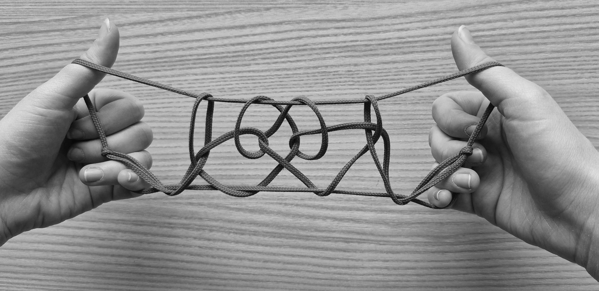

People often ask me what I'm researching. Here is the summary, in exactly as much or as little detail as you would like.
Over the winter and summer 2026 semesters,
(that is to say,
where a professor and a small number of students (1-5) go in-depth into a single topic together, with weekly meetings and usually some sort of presentation or final written product at the end
People my age often ask me how I got into undergraduate research, and every time I have to tell them: I'm not really sure either?
I met Parker when I was taking his multivariable calculus course in Fall 2025. I visited office hours pretty frequently, getting excited enough about lecture concepts that he invited me to
Seminar's an absolute blast. It's an hour every week for friendly, informal math talks from undergraduates and professors. During my time there, we've had talks on sliding-block puzzle topology, braid theory, matroids, non-standard analysis, cohomology theory, string figures (hmm I wonder who gave that one), formal logic, mathematical biology (hmmm I wonder who gave that one), and many more.
In October, my partner and I are co-conspiring to present on the group theory of crystal lattices. Stay tuned!
and we realised that we both enjoyed string figures and a particularly goofy brand of math-for-its-own-sake.
From there, a reading course just sort of... happened. I genuinely wish I could give people better advice on seeking out specific research opportunities. I've had three so far, and all of them have kind of spontaneously materialised out of showing up to office hours and being excited about something the prof also happened to be interested in: string figures (in a math context), math (in a biology context), and biology (in a computer science context).
where we
i.e. given a picture of a string figure, find the algorithm that generates it
this guy:

The paper has been accepted and will be published in December in BISFA's 2026 issue.